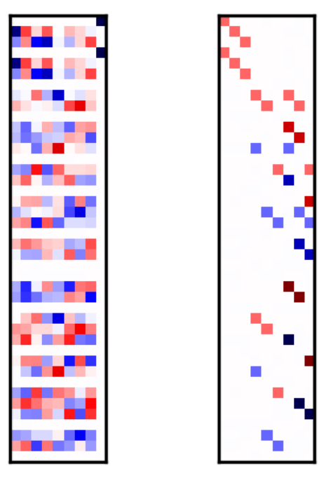

Applied Mathematics
I am very interested in the use of mathematical methods to describe and analyse natural phenomena and their use to solve technical problems. In my time as a researcher in particle physics I worked a lot on group theory in particle physics.
Regarding industrial applications my main interest is the application of linear algebra in problem solving. One of my recent projects was the development of a method for making information encoded in bases of finite-dimensional vector spaces more accessible by bringing the basis to a normal form. The image below, taken from the paper behind the above link, shows the functionality.
The two color matrices represent different bases of a 9-dimensional subspace of a 42-dimensional vector space stemming from a physical application. White entries mean zero values, colored entries non-zero values. The left basis is they way it comes out of the numerical algorithm to solve the problem. Transforming it to its normal form one obtains the right basis (of the same vector space). This form reveals that the solution has much more structure than is evident on first sight.